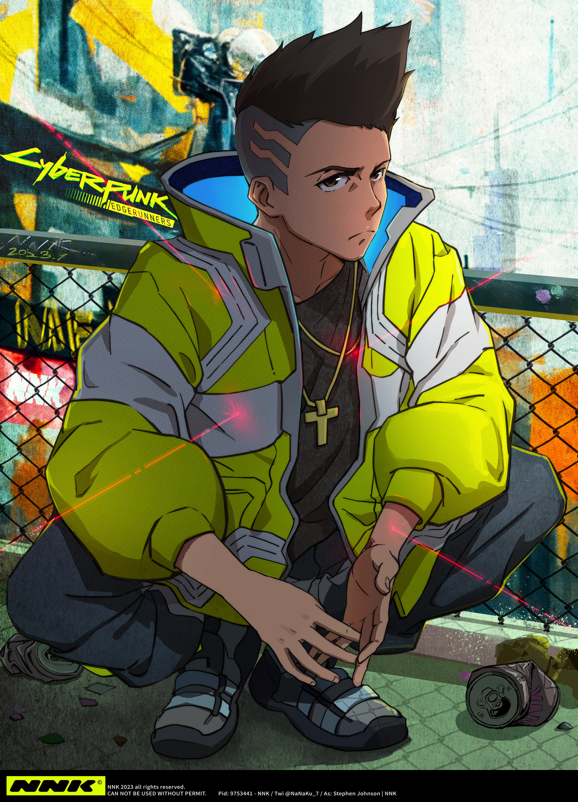
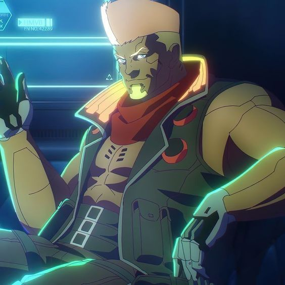
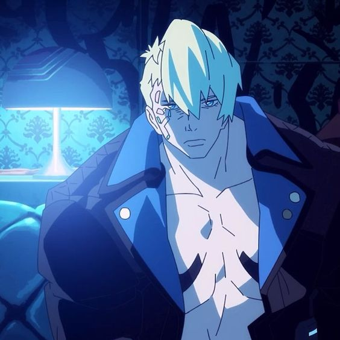
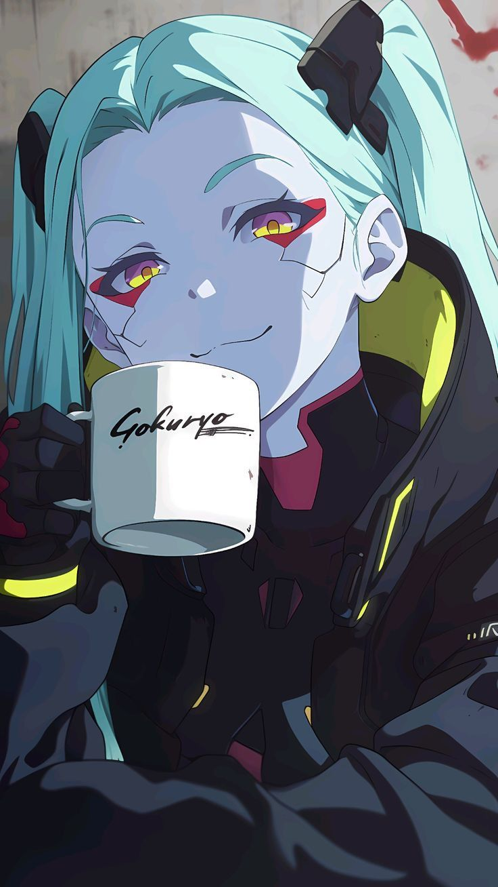

Personajes

David Martinez
El protagonista. Un adolescente de ascendencia hispana que estudia en la prestigiosa Academia Arasaka. Debido a que proviene de una familia pobre, sus compañeros de clase lo acosan sin descanso y siente que no pertenece a la escuela. Una tragedia repentina y devastadora lo lleva a abandonar su educación y lo pone en el camino de convertirse en un «edgerunner».

Lucy Kushinada
Una joven «netrunner» que se involucra románticamente con David y le presenta el inframundo criminal de Night City. Tiene un odio particular hacia Arasaka y sueña con viajar a la Luna.

Maine
Un edgerunner veterano que comanda su propia pandilla. Es uno de los clientes de Glora y permite a David unirse al grupo bajo su guía.

Dorio
Una edgerunner veterana y mano derecha de Maine. Es muy fuerte y a pesar de su apariencia ruda, tiene un lado tierno que solo muestra a las personas en las que confía.

Rebecca
Una edgerunner de gatillo fácil miembro de la pandilla de Maine. Ella es también la hermana menor de Pilar.